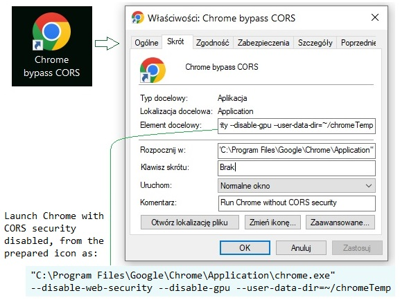

This application shows how to solve the problem of including js files containing JSX syntax ❬script type="text/babel"❭ without NPM tools, as an error occurs when including such a .js file.
The application does not require a web server and not require Node installation. It starts from an html file. This html application [file: index.html] includes a React element defined in the external file [jsx_def_elements.js] with JSX (Babel) syntax.
How to disable the issue with include .js files?
Normally, a regular html file will not attach an external file
[❬script type="text/babel" src="yesnpx3.js"❭]
(internal in one html file it will allow) because the CORS security option of
the Chrome browser will not allow it and will generate an error:
[Access to XMLHttpRequest at 'file:///D:/…./yesnpx3.js' from origin 'null' has been blocked by CORS policy: Cross origin requests are only supported for protocol schemes: http, data, isolated-app , chrome-extension, chrome, https, chrome-untrusted.]
However, to enable the developer to test, you can temporarily disable CORS in Chrome as follows:
Launch Chrome with CORS security disabled, from the prepared icon as:
["C:\Program Files\Google\Chrome\Application\chrome.exe"
--disable-web-security --disable-gpu --user-data-dir=~/chromeTemp]
Then the html file will launch the external file [yesnpx3.js] called as: [❬script type="text/babel" src="yesnpx3.js"❭]
|  |
|
When you run Chrome as described above, React elements should appear on
the right side of the figure as below
However, it is better to run a local web server or install the environment via Node npm.